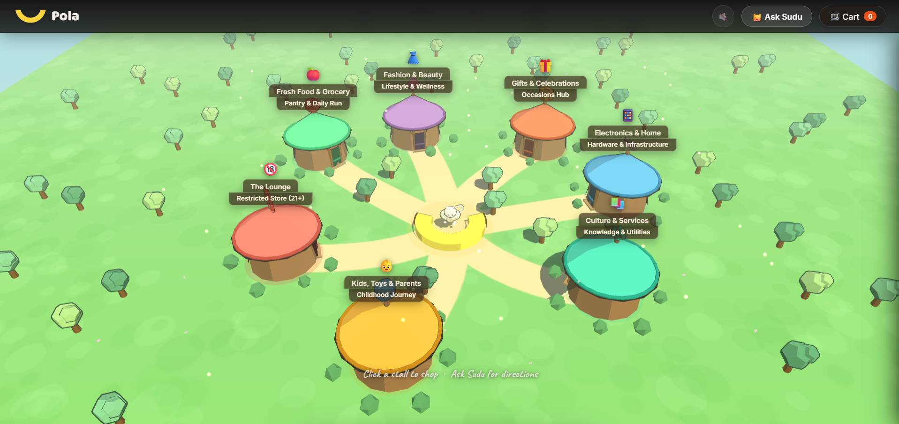

Pola
A 3D open-air market where seven AI shopkeepers run real commerce.

The Problem
The brief for the Kapruka Agent Challenge 2026 was to build an AI shopping agent. I assumed most entries would default to a chat widget bolted onto a storefront — functional, but not much of a demonstration of what agentic commerce could actually feel like beyond text.
Pola set out to answer a different question: what does agentic commerce look like when the interface itself becomes the demonstration, rather than a text box sitting on top of an otherwise ordinary storefront? Rather than a chat window, the brief was reimagined as a small, navigable world.
The Market
Customers walk between seven lit pavilions, each staffed by an AI shopkeeper with its own personality and territory. Each pavilion actually spans two related sub-categories rather than one flat label, which is what keeps seven pavilions from feeling like seven arbitrary buckets, and gives the market real category depth instead of a shallow grid of icons:
- - Fresh Food & Grocery / Pantry & Daily Run
- - Fashion & Beauty / Lifestyle & Wellness
- - Gifts & Celebrations / Occasions Hub
- - Electronics & Home / Hardware & Infrastructure
- - Culture & Services / Knowledge & Utilities
- - Kids, Toys & Parents / Childhood Journey
- - The Lounge / Restricted Store (age-gated, 21+)
A central concierge, Sudu, sits at the hub the seven paths radiate from. That placement solves a genuine wayfinding problem a flat product list never has to deal with. In a spatial market, "where do I actually go for this" is a real question, and Sudu exists specifically to answer it.
Under the Hood
None of this works if the market feels like a static 3D scene with a chatbot glued on top. The three decisions below are what make it feel transactional and distinct pavilion-to-pavilion, rather than one assistant wearing seven different outfits.
Every shopkeeper runs real agentic tool calls against Kapruka's live commerce MCP for search, delivery estimates, cart, and checkout. Ask a shopkeeper for a recommendation and the answer comes from an actual query against the live catalog and inventory.
To keep the system running at zero hosting cost regardless of which provider hits a rate limit, the FastAPI backend routes through Gemini → Cerebras → Groq, in that order, so a rate-limited provider degrades gracefully to the next one rather than taking the whole market offline.
Several iterations: a visual style refresh toward a warmer, more Ghibli-inspired look, behavioural bug fixes across all seven personas so each one stayed distinct in character rather than converging on the same generic assistant voice, and dedicated prompt engineering per shopkeeper.
The Outcome
In my opinion, the multi-provider fallback architecture stands out as the project's core technical differentiator, being built for reliability. A lot of agent-challenge submissions demonstrate a single happy-path conversation and stop there. Pola's fallback chain was built because I believe the harder engineering problem in agentic commerce isn't getting one shopkeeper to respond well once. It's getting seven of them to keep responding reliably in the real world, especially when things go wrong.
A full architectural write-up, world-building through checkout flow, exists in the essays section.